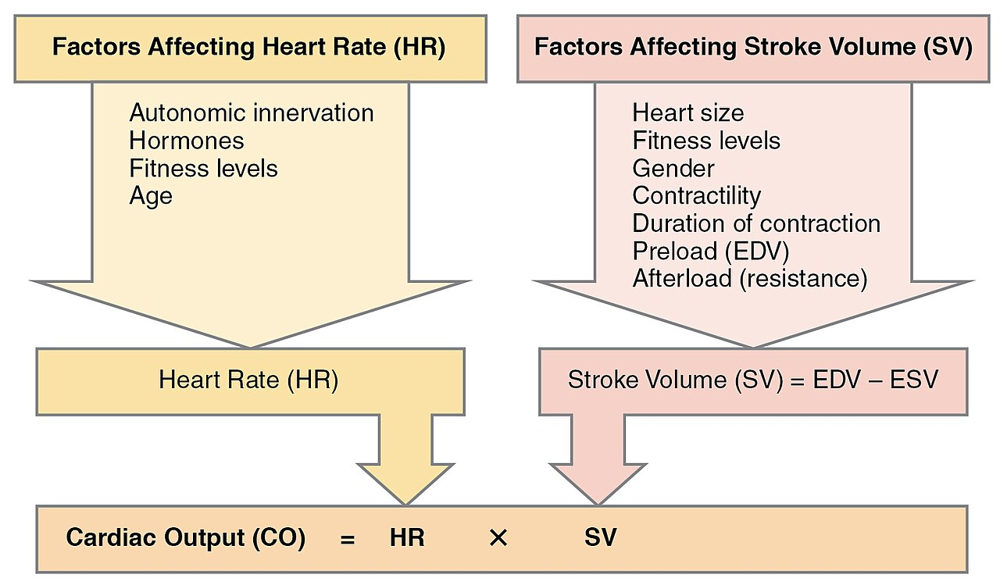

Tại Sao Thiết Bị Đeo Lại Đo Nhịp Tim Nghỉ Khi Bạn Đang Ngủ?
Trước đây, việc kiểm tra Nhịp tim nghỉ (Resting Heart Rate - RHR) đồng nghĩa với việc ngồi yên tại bàn làm việc hoặc phòng khám và đếm mạch đập trong 60 giây. Ngày nay, các thiết bị đeo tiên tiến như Oura Ring, WHOOP, Garmin, và Fitbit đo Nhịp tim nghỉ ban đêm (Nocturnal / Overnight RHR) khi bạn đang chìm sâu vào giấc ngủ.
Tại sao đo RHR ban đêm lại chính xác hơn gấp nhiều lần so với đo lúc ngồi nghỉ ban ngày? Vào ban ngày, ngay cả những tác nhân rất nhỏ—như tiêu hóa bữa sáng, suy nghĩ về cuộc họp sắp tới, tư thế ngồi thẳng chống lại trọng lực hay sự thay đổi nhiệt độ phòng—đều có thể làm tăng nhịp mạch từ 8 đến 15 nhịp/phút (bpm). Việc đo nhịp tim khi bạn nằm ngang và ngủ sâu giúp loại bỏ hoàn toàn các yếu tố gây nhiễu ban ngày, phơi bày đường cơ sở sinh lý thực sự của trái tim.
Điểm Thấp Nhất (Nadir) So Với Trung Bình Cả Đêm: Tùy thuộc vào ứng dụng bạn dùng, bạn sẽ thấy hai con số RHR ban đêm: 1. Nhịp Tim Nghỉ Thấp Nhất Đêm (RHR Nadir): Mức trung bình 5 phút thấp nhất được ghi nhận trong suốt đêm (thường đạt
42–55 bpmở người năng động). 2. Nhịp Tim Ngủ Trung Bình (Sleeping Average RHR): Nhịp tim trung bình tính trên toàn bộ thời gian ngủ (thường cao hơn mức đáy từ3 đến 6 bpm).

Phương Trình Đằng Sau Nhịp Tim Thấp Của Vận Động Viên: Thể Tích Nhát Bóp (Stroke Volume)
Tại sao một vận động viên chạy bộ đường dài hoặc bơi lội thường có RHR ban đêm chỉ từ 40 đến 48 bpm, trong khi người ít vận động có mức trung bình từ 65 đến 75 bpm? Câu trả lời nằm ở phương trình nền tảng của sinh lý học tim mạch:
Cung Lượng Tim (Q) = Nhịp Tim (HR) × Thể Tích Nhát Bóp (SV)
Ở trạng thái nghỉ ngơi hoàn toàn, cơ thể người trưởng thành cần khoảng 5.0 lít (5.000 mL) máu mỗi phút (Cung lượng tim) để cung cấp oxy cho các cơ quan nội tạng và mô:
- Trái Tim Chưa Tập Luyện (Thể Tích Nhát Bóp Nhỏ): Nếu tâm thất trái của bạn bơm được 70 mL máu trong mỗi nhát bóp, trái tim buộc phải co bóp 71 lần mỗi phút (71 bpm × 70 mL ≈ 5.000 mL/phút) để đáp ứng nhu cầu oxy lúc nghỉ.
- Trái Tim Rèn Luyện Sức Bền (Thể Tích Nhát Bóp Lớn): Nhiều tháng tập luyện cardio Zone 2 và chạy biến tốc giúp củng cố cơ tim và mở rộng buồng tâm thất trái (phì đại cơ tim sinh lý hướng tâm/lệch tâm lành mạnh). Khi tâm thất trái bơm được tới 105 mL máu trong mỗi nhát bóp, trái tim chỉ cần co bóp 48 lần mỗi phút (48 bpm × 105 mL ≈ 5.040 mL/phút) để lưu thông đúng 5 lít máu đó!
Mỗi nhịp đập tiết kiệm được trong một phút tương đương với việc trái tim giảm được 1.440 lần co bóp mỗi ngày (24 giờ)—giảm đáng kể hao mòn cơ học lên hệ thống tim mạch suốt cuộc đời.
Bảng Định Mức Quần Thể: Nhịp Tim Nghỉ Ban Đêm Bao Nhiêu Là Chuẩn?
Trong một nghiên cứu y học kỹ thuật số quy mô lớn đăng trên tạp chí PLOS ONE (Quer et al., 2020), các nhà khoa học tại Viện Nghiên cứu Scripps đã phân tích hơn 92.000 người trưởng thành đeo đồng hồ thông minh liên tục trong 1 năm. Dù RHR của người lớn dao động rộng từ 40 đến 90 bpm, đường cơ sở của riêng từng cá nhân lại cực kỳ ổn định qua từng tuần trừ khi bị xáo trộn bởi lối sống hoặc bệnh lý:
| Phân Nhóm Thể Lực | RHR Ban Đêm Điển Hình (Nam) | RHR Ban Đêm Điển Hình (Nữ) | Ý Nghĩa Sinh Lý Học Tim Mạch |
|---|---|---|---|
| Vận Động Viên Sức Bền | 38 – 49 bpm | 42 – 52 bpm | Thể tích nhát bóp tâm thất trái lớn, thể tích huyết tương cao và trương lực phế vị rất mạnh. |
| Người Tập Luyện Thể Thao | 50 – 58 bpm | 53 – 61 bpm | Hiệu suất tim phổi tốt và khả năng phục hồi phó giao cảm ban đêm hiệu quả. |
| Người Trưởng Thành Khỏe Mạnh | 59 – 68 bpm | 62 – 71 bpm | Mức nền trung bình; nữ giới tự nhiên cao hơn nam giới 3–4 bpm do kích thước buồng tim nhỏ hơn. |
| Mức Cao / Ít Vận Động | 69 – 82+ bpm | 72 – 85+ bpm | Thường liên quan đến thiếu vận động hiếu khí, căng thẳng mạn tính, thiếu ngủ hoặc gánh nặng chuyển hóa. |
Góc Nhìn Thực Tế Từ Thiết Bị Đeo: Cú Tăng Vọt +5 bpm Qua Đêm Cảnh Báo Điều Gì?
Trong khi xu hướng RHR trong 90 ngày phản ánh nền tảng thể lực hiếu khí, thì việc RHR bất ngờ nhảy vọt +4 đến +10 bpm so với mức nền 30 ngày của bạn chỉ sau một đêm là một trong những tín hiệu cảnh báo sớm đáng tin cậy nhất trên đồng hồ thông minh:
- Ủ Bệnh Nhiễm Vi-rút Hoặc Vi Khuẩn: Khi hệ miễn dịch phát hiện mầm bệnh, nó giải phóng các chất trung gian gây viêm (cytokine gây sốt) để nâng thân nhiệt lõi nhằm ức chế vi-rút. Cứ mỗi 1.0°C (1.8°F) thân nhiệt tăng lên, Nhịp tim nghỉ của bạn sẽ tự động tăng thêm khoảng 8 đến 10 bpm. Rất nhiều trường hợp đồng hồ cảnh báo RHR tăng vọt kèm nhiệt độ da tăng từ 24 đến 48 giờ trước khi bạn nhận thấy triệu chứng sốt hay ho.
- Mất Nước (Dehydration) & Tiếp Xúc Nhiệt Nóng: Huyết tương chủ yếu là nước. Khi bạn bị mất nước sau một ngày nắng nóng hoặc buổi tập ra nhiều mồ hôi, tổng thể tích máu lưu thông giảm xuống. Vì lượng máu đổ về tim mỗi nhịp ít hơn (giảm tiền tải và thể tích nhát bóp), tim buộc phải đập nhanh hơn suốt đêm để duy trì huyết áp.
- Bia Rượu & Bữa Ăn Khuya Thịnh Soạn: Quá trình phân giải ethanol tại gan và tiêu hóa bữa tối 1.000 calo lúc 21:30 tối buộc cơ thể phải điều hướng tới 25% cung lượng tim về đường tiêu hóa, đồng thời kích hoạt thần kinh giao cảm—khiến mạch ngủ cao hơn bình thường từ +5 đến +12 bpm.
- Biến Động Nội Tiết Pha Hoàng Thể (Ở Nữ Giới): Trong nửa sau của chu kỳ kinh nguyệt (sau khi rụng trứng), nồng độ progesterone tăng cao tự nhiên làm tăng thân nhiệt lõi từ
0.3°C đến 0.5°Cvà đẩy RHR ban đêm tăng nhẹ +2 đến +4 bpm—đây là nhịp sinh học hoàn toàn bình thường chứ không phải do giảm thể lực.
4 Bước Khoa Học Giúp Giảm Nhịp Tim Nghỉ Của Bạn
- Xây Dựng Nền Tảng Hiếu Khí Zone 2 (150–180 Phút/Tuần): Tập cardio đều đặn ở ngưỡng vẫn có thể trò chuyện thoải mái (chạy bộ chậm, đạp xe, chèo thuyền hoặc đi bộ dốc ở mức 60%–70% Nhịp tim tối đa) là kích thích số 1 giúp mở rộng Thể tích nhát bóp tâm thất trái, kéo giảm RHR trung bình khoảng 1 bpm sau mỗi 2–3 tuần ở người mới bắt đầu.
- Bù Nước Kèm Điện Giải Vào Ban Ngày: Uống đủ nước bổ sung natri, kali và magie vào buổi sáng và buổi chiều để duy trì thể tích huyết tương tối ưu—và ngưng uống nhiều nước trước giờ ngủ 90 phút để không phải thức dậy đi vệ sinh giữa đêm.
- Dành Khoảng Trống 3 Giờ Sau Bữa Ăn Tối Cuối Cùng: Đi ngủ khi dạ dày đã tiêu hóa xong giúp nhịp tim nhanh chóng hạ xuống đường cong hình chiếc võng ngay trong giờ ngủ đầu tiên.
- Thực Hành 5 Phút Thở Chậm Bằng Mũi Trên Giường: Kéo dài nhịp thở ra kích hoạt dây thần kinh phế vị giải phóng acetylcholine trực tiếp lên nút xoang (SA node) của tim, giúp làm dịu mạch đập ngay trước khi chợp mắt.
Tài Liệu Tham Khảo & Nguồn Y Khoa
- Quer, G., Gouda, P., Galarnyk, M., Topol, E. J., & Steinhubl, S. R. (2020). Inter- and intraindividual variability in daily resting heart rate and its associations with age, sex, sleep, BMI, and time of year: Retrospective, longitudinal cohort study of 92,457 adults. PLOS ONE, 15(2), e0227709. https://pubmed.ncbi.nlm.nih.gov/32027692/
- Reimers, A. K., Knapp, G., & Reimers, C. D. (2018). Effects of Exercise on the Resting Heart Rate: A Systematic Review and Meta-Analysis of Interventional Studies. Journal of Clinical Medicine, 7(12), 503. https://pubmed.ncbi.nlm.nih.gov/30513777/
- Oura Ring Pulse Blog. Resting Heart Rate: What Is a Normal RHR & How to Lower Yours. https://ouraring.com/blog/resting-heart-rate/
- WHOOP The Locker. Resting Heart Rate: Normal Ranges, What It Means & How to Improve It. https://www.whoop.com/us/en/thelocker/normal-resting-heart-rate-improve-it/